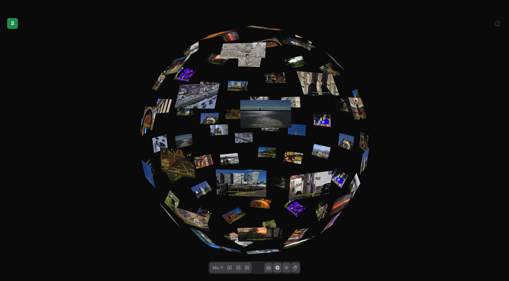
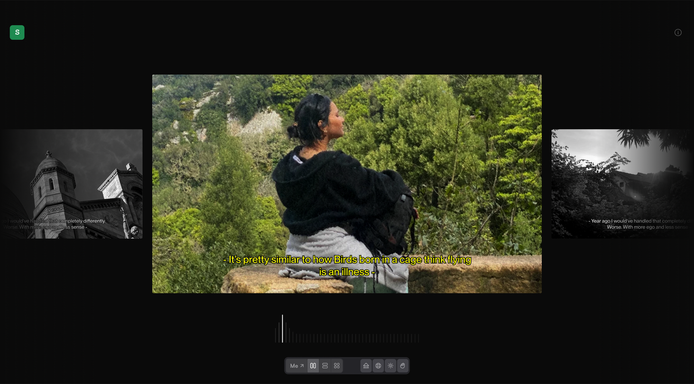

Highlights




05Case Study
A personal photo and conversation archive, built for longevity. The same 54 weeks of moments rendered four different ways — strip, feed, gallery, globe.
Subtitles started as a question: what's the right shape for a personal archive? A photo dump loses context. A timeline loses feel. A chat log loses the images. The answer was to build all four and let the mood decide.
Strip view shows the weeks in sequence. Feed surfaces individual moments. Gallery puts the photos first. Globe maps them in three-dimensional space via a Three.js sphere. The data is the same — only the perspective changes.
The shape of memory depends on how you're looking for it.

Strip
Sequence as default
Weeks as horizontal rows, photos and conversations interleaved. Context preserved — you see what led to what.
Feed
Moments surfaced
Photos re-ranked by signal. Surfaces the moments that would stay buried inside a week in strip view.
Gallery
Images only
Text stripped away. The photos fill the screen — for when you want to look at faces, not read words.
Globe
Space as index
A Three.js sphere maps each week to a point. Navigate by spinning — works well for random access.
This project uses a colour palette of 4 colours